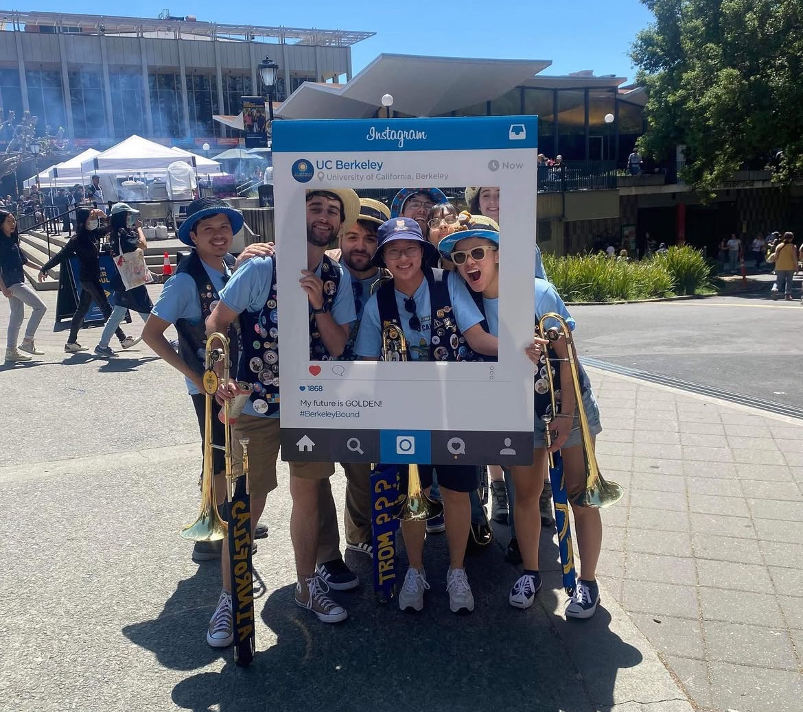
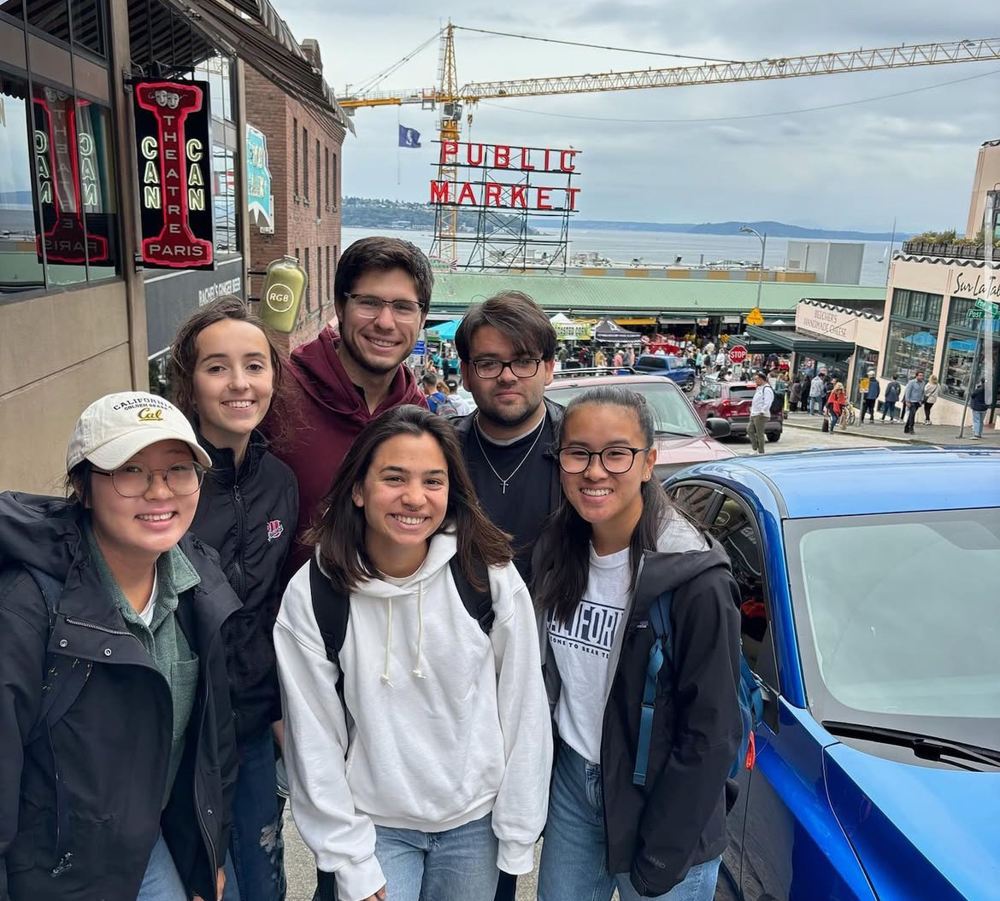

My Musical Career
I've been a musician my entire life. I began playing guitar at the age of 7 and never looked back! I am currently a part of the University Wind Ensemble and Cal Band.

Die Hard
One thing about me is that I love my teams. I have been a huge fan of the LA Dodgers my entire life. I love going to games whenever I can.

Traveling
I love to travel. Some of my favorite places I have been to are the Pacific North West, specifically Seattle, and New York. Some of the coolest places I have been to are Beijing, China and Mexico City, Mexico.